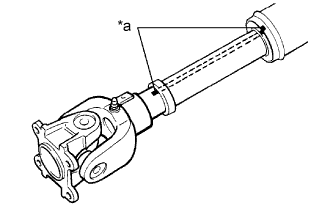
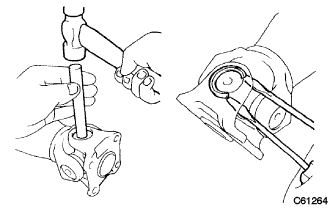
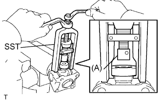
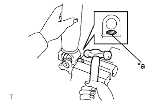
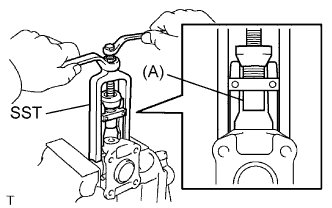
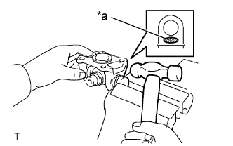

КАРДАННЫЙ ВАЛ В СБОРЕ > РАЗБОРКА |
| 1. СНИМИТЕ СКОЛЬЗЯЩУЮ ВИЛКУ КАРДАННОГО ШАРНИРА ЗАДНЕГО КАРДАННОГО ВАЛА В СБОРЕ |
|  |
Нанесите метки на карданный вал и скользящую вилку.
| *a | Метка |
Снимите скользящую вилку с карданного вала.
Снимите пресс-масленку со скользящей вилки карданного шарнира.
| 2. СНИМИТЕ ПОДШИПНИК КРЕСТОВИНЫ КАРДАННОГО ШАРНИРА ЗАДНЕГО КАРДАННОГО ВАЛА |
 |
Нанесите метки на фланцевую вилку и скользящую вилку.
| *a | Метка |
|  |
С помощью латунного стержня и молотка слегка вбейте наружные кольца подшипников крестовины.
С помощью 2 отверток извлеките 4 пружинных стопорных кольца из канавок.
|  |
С помощью SST снимите подшипник крестовины со скользящей вилки.
|  |
Зажмите наружное кольцо подшипника крестовины в тисках и выбейте карданный вал молотком.
| *a | Место нанесения ударов |
|  |
Установите 2 снятых наружных кольца подшипников крестовины на крестовину карданного шарнира.
С помощью SST снимите подшипник с вилки.
|  |
Зажмите наружное кольцо подшипника в тисках между алюминиевыми пластинами и выбейте вилку молотком.
| *a | Место нанесения ударов |
Снимите крестовину карданного шарнира.